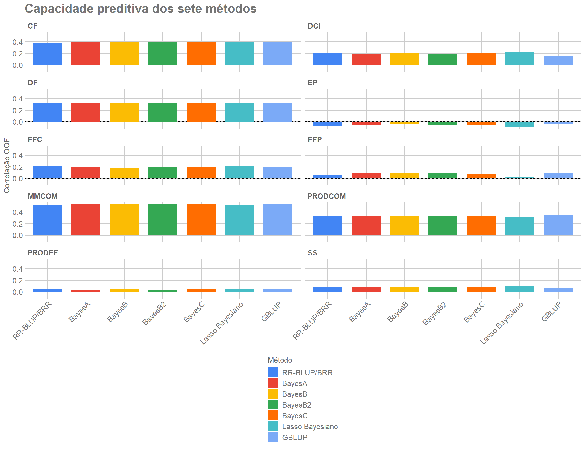
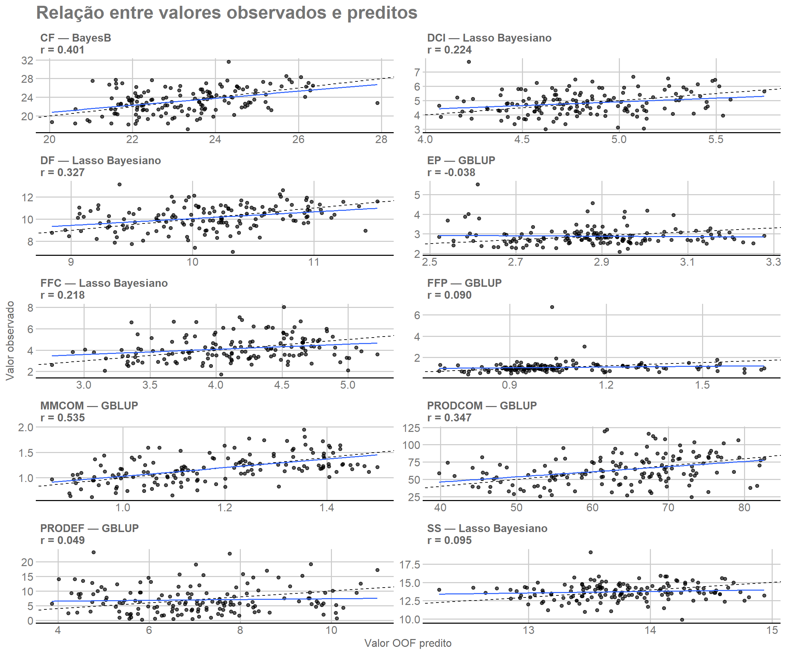
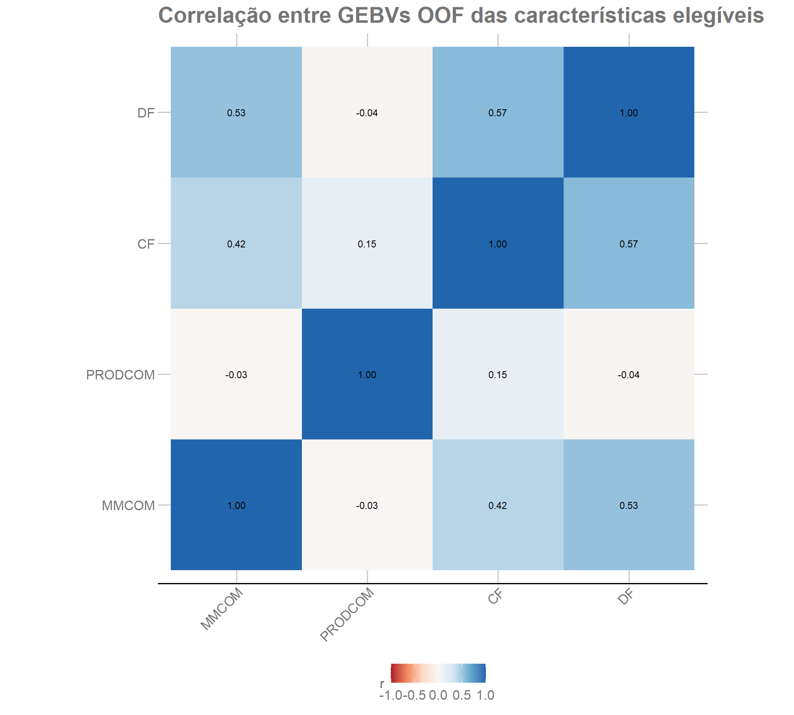
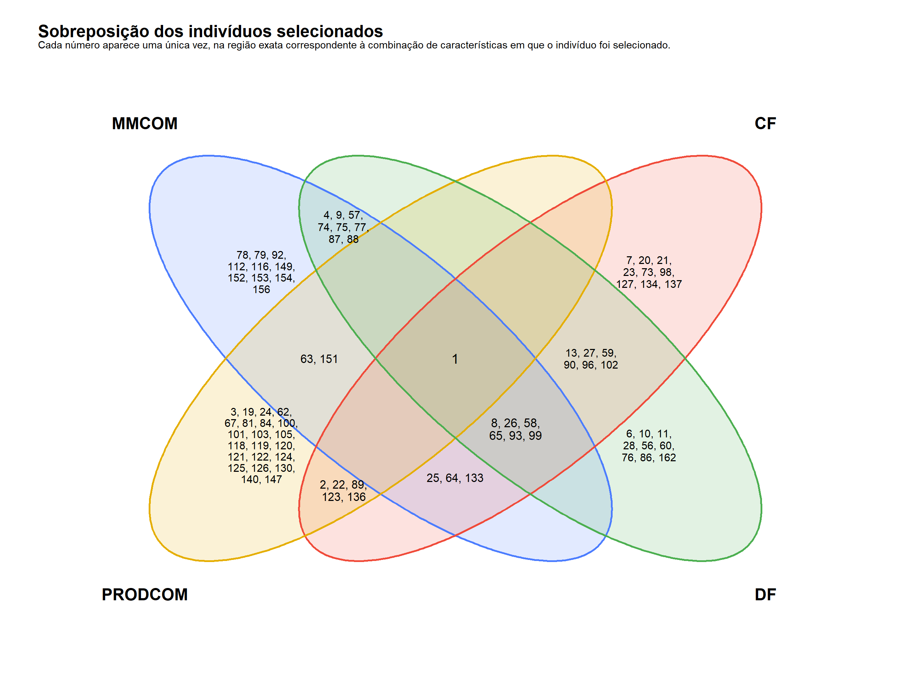

Este módulo reúne os resultados produzidos no Módulo 03 e os organiza em uma sequência de análise voltada à interpretação e à seleção genômica:
avaliar os diagnósticos de convergência → resumir as métricas de ajuste e desempenho preditivo → escolher o método por característica → interpretar os valores genômicos → examinar relações entre características → definir a elegibilidade → selecionar indivíduos → avaliar a recorrência.
A escolha do método é feita separadamente para cada característica e prioriza o desempenho preditivo OOF. O DIC permanece como informação complementar. Os diagnósticos MCMC são resumidos para avaliar o comportamento global das cadeias, mas não constituem um filtro de seleção.
Depois da escolha dos métodos, os GEBVs OOF são obtidos para todas as características e avaliados também em conjunto por meio de suas correlações. Somente após essa etapa são aplicados os critérios de elegibilidade para seleção genômica.
Os pacotes abaixo são usados para manipulação das tabelas, construção das figuras, formatação e definição de caminhos relativos ao projeto.
library(dplyr) # Agrupamento, junção e resumo de tabelas.
library(tidyr) # Reorganização entre formatos longo e largo.
library(ggplot2) # Construção de gráficos diagnósticos.
library(ggthemes) # Aplicação do tema e da escala GDocs.
library(knitr) # Formatação de tabelas em documentos R Markdown.
library(here) # Construção de caminhos relativos ao projeto.A função auxiliar abaixo padroniza a apresentação das tabelas no tutorial.
O módulo utiliza matrices_object.rds, com fenótipos e
metadados, e models_object.rds, com métricas por fold,
predições OOF e diagnósticos MCMC. Os resultados são gravados somente ao
final da análise.
matrices_object <- readRDS(
here("output", "matrices", "matrices_object.rds")
)
models_object <- readRDS(
here("output", "models", "models_object.rds")
)
metrics <- models_object$metrics_by_fold
predictions <- models_object$predictions
convergence <- models_object$convergence_diagnostics
traits <- colnames(matrices_object$phenotypes)
methods <- models_object$settings$methods
OOF_R_SELECTION_THRESHOLD <- 0.30
NRMSE_SELECTION_THRESHOLD <- 1.00
SELECTION_PROPORTION <- 0.20Os códigos internos dos métodos são mantidos nos objetos analíticos. Os rótulos e o tema definidos a seguir afetam apenas a apresentação.
method_labels <- c(
RRBLUP = "RR-BLUP/BRR",
BayesA = "BayesA",
BayesB = "BayesB",
BayesB2 = "BayesB2",
BayesC = "BayesC",
BL = "Lasso Bayesiano",
GBLUP = "GBLUP"
)
selection_objective_labels <- c(
increase = "Aumentar",
decrease = "Diminuir"
)
project_theme <- theme_gdocs() +
theme(
legend.position = "bottom",
legend.direction = "horizontal",
legend.box = "horizontal",
strip.text = element_text(face = "bold"),
plot.title = element_text(face = "bold")
)Antes de comparar o desempenho dos métodos, os diagnósticos MCMC são examinados para verificar se o comportamento das cadeias é compatível com convergência segundo os critérios monitorados.
Os diagnósticos calculados no Módulo 03 são resumidos globalmente. Um
ajuste é considerado sem sinalização quando nenhum dos parâmetros
monitorados recebeu Review_flag.
fit_convergence <- convergence |>
group_by(Run_id, Trait, Method) |>
summarise(
Diagnostic_flag = any(Review_flag, na.rm = TRUE),
.groups = "drop"
)
convergence_overview <- data.frame(
Nível = c("Ajustes", "Parâmetros monitorados"),
Total = c(nrow(fit_convergence), nrow(convergence)),
Sem_sinalização = c(
sum(!fit_convergence$Diagnostic_flag),
sum(!convergence$Review_flag, na.rm = TRUE)
)
) |>
mutate(
Proporção_sem_sinalização = Sem_sinalização / Total
)
convergence_by_trait_method <- convergence |>
group_by(Trait, Method) |>
summarise(
Runs = n_distinct(Run_id),
Parameters_reviewed = n(),
Parameters_flagged = sum(Review_flag, na.rm = TRUE),
Runs_with_flags = n_distinct(Run_id[Review_flag %in% TRUE]),
Minimum_ESS = min(Effective_sample_size, na.rm = TRUE),
Maximum_absolute_Geweke = max(abs(Geweke_Z), na.rm = TRUE),
.groups = "drop"
)
tabela_html(
convergence_overview,
digits = 4,
caption = "Síntese global dos diagnósticos MCMC",
col.names = c("Nível", "Total", "Sem sinalização", "Proporção")
)| Nível | Total | Sem sinalização | Proporção |
|---|---|---|---|
| Ajustes | 350 | 314 | 0.8971 |
| Parâmetros monitorados | 700 | 658 | 0.9400 |
A predominância de ajustes e parâmetros sem sinalização indica que a maioria das cadeias apresentou comportamento compatível com convergência segundo os diagnósticos monitorados. Essa síntese não prova convergência de todos os efeitos de marcador individualmente e não participa da escolha do método.
A relação observado × predito complementa as métricas numéricas. A linha tracejada representa a relação 1:1 e a linha contínua corresponde à regressão dos valores observados sobre as predições OOF.
As estimativas OOF herdam o desenho de validação dos módulos anteriores. Cada indivíduo contribui com uma única predição OOF por método e característica. As métricas agrupadas descrevem o desempenho preditivo na população representada pelo conjunto de dados.
# Combina as predições OOF e calcula as métricas preditivas agregadas por característica e método.
pooled_metrics <- predictions |>
group_by(Trait, Method) |>
summarise(
N = n(),
r = cor(Observed, Predicted),
RMSE = sqrt(mean((Observed - Predicted)^2)),
MAE = mean(abs(Observed - Predicted)),
Bias = mean(Predicted - Observed),
Slope = cov(Observed, Predicted) / var(Predicted),
.groups = "drop"
) |>
mutate(
t_value = r * sqrt((N - 2) / (1 - r^2)),
p_value = 2 * pt(abs(t_value), df = N - 2, lower.tail = FALSE)
) |>
select(-t_value)
# Resume os resultados no objeto `fold_summary`.
fold_summary <- metrics |>
group_by(Trait, Method) |>
summarise(
Mean_DIC = mean(DIC),
SD_DIC = sd(DIC),
Mean_fold_r = mean(Correlation),
SD_fold_r = sd(Correlation),
Mean_fold_RMSE = mean(RMSE),
SD_fold_RMSE = sd(RMSE),
Mean_fold_MAE = mean(MAE),
SD_fold_MAE = sd(MAE),
.groups = "drop"
)A correlação de Pearson, o RMSE, o MAE, o viés e a inclinação são calculados com as 150 predições OOF. Os p-valores associados à correlação são mantidos somente como informação descritiva.
Para complementar a avaliação preditiva, o DIC é resumido dentro de cada característica. Seguindo a lógica do estudo de referência (Silva et al. 2021):
\[ \Delta_j=\overline{DIC}_j-\min_k(\overline{DIC}_k), \]
\[ Wprob_j=\frac{\exp(-\Delta_j/2)}{\sum_k\exp(-\Delta_k/2)}, \qquad ER_j=\frac{Wprob_{\max}}{Wprob_j}. \]
Wprob representa suporte relativo derivado do DIC e não
é interpretado como probabilidade posterior calibrada de um modelo.
# Integra desempenho por fold e DIC para construir as medidas usadas na comparação dos métodos.
model_comparison <- pooled_metrics |>
left_join(fold_summary, by = c("Trait", "Method")) |>
group_by(Trait) |>
mutate(
Delta_DIC = Mean_DIC - min(Mean_DIC),
log_weight = -0.5 * Delta_DIC,
stable_weight = exp(log_weight - max(log_weight)),
Wprob = stable_weight / sum(stable_weight),
# Calcula a razão de evidência relativa ao método de maior Wprob em cada característica.
ER = max(Wprob) / Wprob
) |>
ungroup() |>
select(
Trait, Method, Mean_DIC, SD_DIC, Delta_DIC, Wprob, ER,
N, r, p_value, RMSE, MAE, Bias, Slope,
Mean_fold_r, SD_fold_r, Mean_fold_RMSE, SD_fold_RMSE,
Mean_fold_MAE, SD_fold_MAE
) |>
arrange(match(Trait, traits), Delta_DIC)Desempenho OOF e DIC respondem a perguntas diferentes. A correlação OOF é a principal referência para desempenho preditivo, enquanto DIC fornece informação complementar sobre ajuste e complexidade.
# Ordena os métodos e constrói o gráfico de correlação OOF por característica.
predictive_plot <- model_comparison |>
mutate(Method = factor(Method, levels = methods)) |>
ggplot(aes(x = Method, y = r, fill = Method)) +
geom_hline(yintercept = 0, linetype = 2, linewidth = 0.4) +
geom_hline(
yintercept = OOF_R_SELECTION_THRESHOLD,
linetype = 3,
linewidth = 0.5
) +
geom_col(width = 0.75) +
facet_wrap(~ Trait, scales = "fixed", ncol = 2) +
scale_fill_gdocs(
breaks = methods,
labels = method_labels
) +
scale_x_discrete(labels = method_labels) +
labs(
x = NULL,
y = "Correlação OOF",
fill = "Método",
title = "Capacidade preditiva dos sete métodos",
subtitle = paste0(
"A linha pontilhada indica r OOF = ",
sprintf("%.2f", OOF_R_SELECTION_THRESHOLD),
"; a elegibilidade exige r superior a esse valor."
)
) +
project_theme +
guides(fill = guide_legend(nrow = 1, byrow = TRUE)) +
theme(
legend.direction = "horizontal",
legend.box = "horizontal",
axis.text.x = element_text(angle = 45, hjust = 1)
)
predictive_plot
A tabela conjunta permite comparar as duas fontes de evidência sem combiná-las em um único escore.
model_comparison_display <- model_comparison |>
mutate(Method_label = unname(method_labels[Method])) |>
transmute(
Trait,
Method,
Method_label,
DIC = sprintf("%.2f", Mean_DIC),
Delta_DIC = sprintf("%.2f", Delta_DIC),
Wprob = sprintf("%.3f", Wprob),
ER = sprintf("%.3f", ER),
r = sprintf("%.3f", r),
p_value = if_else(
p_value < 0.001,
"<0.001",
sprintf("%.3f", p_value)
)
) |>
arrange(match(Trait, traits), match(Method, methods))
tabela_html(
model_comparison_display |>
select(Trait, Method_label, DIC, Delta_DIC, Wprob, ER, r, p_value),
caption = "Comparação dos sete métodos por característica",
col.names = c("Característica", "Método", "DIC", "Delta DIC", "Wprob", "ER", "r", "p-valor")
)| Característica | Método | DIC | Delta DIC | Wprob | ER | r | p-valor |
|---|---|---|---|---|---|---|---|
| MMCOM | RR-BLUP/BRR | -19.28 | 0.48 | 0.182 | 1.270 | 0.526 | <0.001 |
| MMCOM | BayesA | -18.40 | 1.36 | 0.117 | 1.972 | 0.528 | <0.001 |
| MMCOM | BayesB | -17.65 | 2.11 | 0.081 | 2.866 | 0.530 | <0.001 |
| MMCOM | BayesB2 | -18.38 | 1.38 | 0.116 | 1.991 | 0.529 | <0.001 |
| MMCOM | BayesC | -18.47 | 1.28 | 0.122 | 1.899 | 0.529 | <0.001 |
| MMCOM | Lasso Bayesiano | -19.75 | 0.00 | 0.231 | 1.000 | 0.526 | <0.001 |
| MMCOM | GBLUP | -18.89 | 0.86 | 0.150 | 1.539 | 0.535 | <0.001 |
| PRODCOM | RR-BLUP/BRR | 1069.69 | 0.86 | 0.148 | 1.536 | 0.329 | <0.001 |
| PRODCOM | BayesA | 1070.03 | 1.20 | 0.125 | 1.823 | 0.336 | <0.001 |
| PRODCOM | BayesB | 1070.29 | 1.46 | 0.110 | 2.073 | 0.337 | <0.001 |
| PRODCOM | BayesB2 | 1070.05 | 1.22 | 0.124 | 1.839 | 0.338 | <0.001 |
| PRODCOM | BayesC | 1069.83 | 1.00 | 0.138 | 1.647 | 0.333 | <0.001 |
| PRODCOM | Lasso Bayesiano | 1069.98 | 1.15 | 0.128 | 1.775 | 0.314 | <0.001 |
| PRODCOM | GBLUP | 1068.83 | 0.00 | 0.227 | 1.000 | 0.347 | <0.001 |
| PRODEF | RR-BLUP/BRR | 714.34 | 0.89 | 0.138 | 1.557 | 0.042 | 0.606 |
| PRODEF | BayesA | 714.21 | 0.76 | 0.147 | 1.465 | 0.038 | 0.641 |
| PRODEF | BayesB | 714.52 | 1.07 | 0.126 | 1.703 | 0.044 | 0.593 |
| PRODEF | BayesB2 | 714.18 | 0.73 | 0.149 | 1.442 | 0.038 | 0.647 |
| PRODEF | BayesC | 714.45 | 0.99 | 0.131 | 1.644 | 0.046 | 0.572 |
| PRODEF | Lasso Bayesiano | 715.07 | 1.62 | 0.095 | 2.251 | 0.046 | 0.576 |
| PRODEF | GBLUP | 713.45 | 0.00 | 0.215 | 1.000 | 0.049 | 0.554 |
| CF | RR-BLUP/BRR | 557.47 | 1.23 | 0.119 | 1.850 | 0.386 | <0.001 |
| CF | BayesA | 557.77 | 1.53 | 0.102 | 2.151 | 0.391 | <0.001 |
| CF | BayesB | 556.88 | 0.63 | 0.160 | 1.372 | 0.401 | <0.001 |
| CF | BayesB2 | 557.74 | 1.50 | 0.104 | 2.114 | 0.391 | <0.001 |
| CF | BayesC | 556.62 | 0.37 | 0.182 | 1.205 | 0.397 | <0.001 |
| CF | Lasso Bayesiano | 556.24 | 0.00 | 0.220 | 1.000 | 0.389 | <0.001 |
| CF | GBLUP | 557.56 | 1.32 | 0.114 | 1.933 | 0.389 | <0.001 |
| DF | RR-BLUP/BRR | 348.39 | 0.35 | 0.164 | 1.192 | 0.321 | <0.001 |
| DF | BayesA | 349.09 | 1.05 | 0.115 | 1.694 | 0.319 | <0.001 |
| DF | BayesB | 349.39 | 1.35 | 0.099 | 1.967 | 0.324 | <0.001 |
| DF | BayesB2 | 349.08 | 1.05 | 0.116 | 1.687 | 0.318 | <0.001 |
| DF | BayesC | 348.57 | 0.53 | 0.150 | 1.307 | 0.326 | <0.001 |
| DF | Lasso Bayesiano | 348.03 | 0.00 | 0.195 | 1.000 | 0.327 | <0.001 |
| DF | GBLUP | 348.43 | 0.39 | 0.160 | 1.218 | 0.316 | <0.001 |
| DCI | RR-BLUP/BRR | 292.92 | 1.03 | 0.133 | 1.673 | 0.200 | 0.014 |
| DCI | BayesA | 293.54 | 1.65 | 0.098 | 2.283 | 0.193 | 0.018 |
| DCI | BayesB | 292.81 | 0.92 | 0.141 | 1.583 | 0.201 | 0.014 |
| DCI | BayesB2 | 293.53 | 1.65 | 0.098 | 2.278 | 0.194 | 0.017 |
| DCI | BayesC | 292.16 | 0.27 | 0.194 | 1.147 | 0.200 | 0.014 |
| DCI | Lasso Bayesiano | 291.89 | 0.00 | 0.223 | 1.000 | 0.224 | 0.006 |
| DCI | GBLUP | 293.24 | 1.35 | 0.113 | 1.964 | 0.158 | 0.054 |
| EP | RR-BLUP/BRR | 163.40 | 2.56 | 0.079 | 3.605 | -0.075 | 0.362 |
| EP | BayesA | 161.87 | 1.04 | 0.170 | 1.681 | -0.052 | 0.523 |
| EP | BayesB | 161.94 | 1.10 | 0.165 | 1.734 | -0.046 | 0.577 |
| EP | BayesB2 | 161.86 | 1.03 | 0.171 | 1.670 | -0.052 | 0.528 |
| EP | BayesC | 162.94 | 2.11 | 0.100 | 2.868 | -0.062 | 0.452 |
| EP | Lasso Bayesiano | 165.46 | 4.62 | 0.028 | 10.089 | -0.090 | 0.274 |
| EP | GBLUP | 160.84 | 0.00 | 0.286 | 1.000 | -0.038 | 0.645 |
| FFC | RR-BLUP/BRR | 376.66 | 0.79 | 0.133 | 1.481 | 0.210 | 0.010 |
| FFC | BayesA | 376.39 | 0.52 | 0.152 | 1.297 | 0.191 | 0.019 |
| FFC | BayesB | 376.62 | 0.74 | 0.136 | 1.450 | 0.186 | 0.023 |
| FFC | BayesB2 | 376.40 | 0.52 | 0.151 | 1.300 | 0.190 | 0.020 |
| FFC | BayesC | 376.74 | 0.86 | 0.128 | 1.538 | 0.200 | 0.014 |
| FFC | Lasso Bayesiano | 377.16 | 1.29 | 0.103 | 1.901 | 0.218 | 0.007 |
| FFC | GBLUP | 375.87 | 0.00 | 0.197 | 1.000 | 0.195 | 0.017 |
| FFP | RR-BLUP/BRR | 198.97 | 3.80 | 0.043 | 6.676 | 0.058 | 0.484 |
| FFP | BayesA | 195.86 | 0.69 | 0.202 | 1.409 | 0.086 | 0.293 |
| FFP | BayesB | 195.99 | 0.81 | 0.190 | 1.501 | 0.089 | 0.280 |
| FFP | BayesB2 | 195.82 | 0.65 | 0.206 | 1.383 | 0.087 | 0.290 |
| FFP | BayesC | 198.06 | 2.89 | 0.067 | 4.240 | 0.069 | 0.399 |
| FFP | Lasso Bayesiano | 202.46 | 7.28 | 0.007 | 38.143 | 0.032 | 0.701 |
| FFP | GBLUP | 195.17 | 0.00 | 0.285 | 1.000 | 0.090 | 0.273 |
| SS | RR-BLUP/BRR | 381.93 | 0.45 | 0.147 | 1.254 | 0.085 | 0.302 |
| SS | BayesA | 382.39 | 0.92 | 0.116 | 1.580 | 0.082 | 0.319 |
| SS | BayesB | 382.11 | 0.64 | 0.134 | 1.374 | 0.084 | 0.308 |
| SS | BayesB2 | 382.42 | 0.94 | 0.115 | 1.599 | 0.082 | 0.321 |
| SS | BayesC | 381.74 | 0.26 | 0.161 | 1.140 | 0.085 | 0.302 |
| SS | Lasso Bayesiano | 381.48 | 0.00 | 0.184 | 1.000 | 0.095 | 0.248 |
| SS | GBLUP | 381.99 | 0.51 | 0.143 | 1.289 | 0.067 | 0.414 |
A tabela mostra que correlação OOF e DIC fornecem informações complementares: um método pode apresentar melhor ajuste relativo por DIC sem ser o mais preditivo fora da amostra. Por isso, as métricas não são combinadas em um escore artificial; a correlação OOF define a prioridade preditiva e RMSE, MAE e DIC são usados na sequência de desempate estabelecida.
O método usado nas etapas seguintes é escolhido dentro de cada característica pela maior correlação OOF. Empates são resolvidos, nessa ordem, por menor RMSE, menor MAE e menor DIC médio.
trait_scale <- predictions |>
distinct(Trait, IND, Observed) |>
group_by(Trait) |>
summarise(
Phenotypic_mean = mean(Observed, na.rm = TRUE),
Phenotypic_SD = sd(Observed, na.rm = TRUE),
.groups = "drop"
)
selected_methods <- model_comparison |>
group_by(Trait) |>
arrange(desc(r), RMSE, MAE, Mean_DIC, .by_group = TRUE) |>
slice(1L) |>
ungroup() |>
transmute(
Trait,
Selected_method = Method,
r,
Abs_r = abs(r),
p_value,
RMSE,
MAE,
Bias,
Slope,
Mean_DIC,
Delta_DIC,
Wprob,
ER
) |>
left_join(trait_scale, by = "Trait") |>
arrange(desc(r), match(Trait, traits))
trait_order_by_prediction <- selected_methods$Trait
model_selection_support <- model_comparison |>
left_join(
selected_methods |>
select(Trait, Selected_method),
by = "Trait"
) |>
mutate(
Is_selected = Method == Selected_method
) |>
arrange(
match(Trait, traits),
match(Method, methods)
)A tabela abaixo resume o método escolhido para cada característica e as principais métricas utilizadas nessa escolha.
selected_methods_display <- selected_methods |>
mutate(Método = unname(method_labels[Selected_method])) |>
transmute(
Trait,
Método,
r = sprintf("%.3f", r),
Abs_r = sprintf("%.3f", Abs_r),
RMSE = sprintf("%.3f", RMSE),
MAE = sprintf("%.3f", MAE),
DIC = sprintf("%.2f", Mean_DIC)
)
tabela_html(
selected_methods_display,
caption = "Método escolhido para cada característica, ordenado pela correlação OOF",
col.names = c(
"Característica", "Método", "r OOF", "|r|",
"RMSE", "MAE", "DIC médio"
)
)| Característica | Método | r OOF | |r| | RMSE | MAE | DIC médio |
|---|---|---|---|---|---|---|
| MMCOM | GBLUP | 0.535 | 0.535 | 0.225 | 0.182 | -18.89 |
| CF | BayesB | 0.401 | 0.401 | 2.459 | 1.960 | 556.88 |
| PRODCOM | GBLUP | 0.347 | 0.347 | 20.283 | 16.026 | 1068.83 |
| DF | Lasso Bayesiano | 0.327 | 0.327 | 1.069 | 0.838 | 348.03 |
| DCI | Lasso Bayesiano | 0.224 | 0.224 | 0.810 | 0.633 | 291.89 |
| FFC | Lasso Bayesiano | 0.218 | 0.218 | 1.148 | 0.889 | 377.16 |
| SS | Lasso Bayesiano | 0.095 | 0.095 | 1.232 | 0.963 | 381.48 |
| FFP | GBLUP | 0.090 | 0.090 | 0.580 | 0.276 | 195.17 |
| PRODEF | GBLUP | 0.049 | 0.049 | 4.832 | 3.885 | 713.45 |
| EP | GBLUP | -0.038 | 0.038 | 0.495 | 0.330 | 160.84 |
A escolha é dependente da característica: GBLUP foi escolhido para
cinco características, Lasso Bayesiano para quatro e BayesB para uma.
MMCOM apresenta a maior magnitude de correlação OOF entre os métodos
escolhidos (r = 0,535). A heterogeneidade entre os métodos
selecionados confirma que não há um único método superior para todos os
caracteres.
selected_predictions <- predictions |>
inner_join(
selected_methods |>
select(Trait, Selected_method, r),
by = "Trait"
) |>
filter(Method == Selected_method) |>
mutate(
Method_label = unname(method_labels[Method]),
Facet = paste0(
Trait, " — ", Method_label,
"\nr = ", sprintf("%.3f", r)
)
)
observed_predicted_plot <- selected_predictions |>
ggplot(aes(x = Predicted, y = Observed)) +
geom_abline(intercept = 0, slope = 1, linetype = 2, linewidth = 0.5) +
geom_point(alpha = 0.65, size = 1.6) +
geom_smooth(method = "lm", formula = y ~ x, se = FALSE, linewidth = 0.7) +
facet_wrap(~ Facet, scales = "free", ncol = 2) +
labs(
x = "Valor OOF predito",
y = "Valor observado",
title = "Relação entre valores observados e preditos"
) +
project_theme +
theme(legend.position = "none")
observed_predicted_plot
| Version | Author | Date |
|---|---|---|
| f151b7e | GitHub | 2026-09-08 |
A figura confirma visualmente a heterogeneidade das métricas: MMCOM apresenta a associação observado × predito mais nítida, enquanto características com correlação próxima de zero exibem nuvens mais dispersas. As linhas 1:1 e de regressão servem como referências de calibração e não alteram os critérios de seleção.
Para cada característica e fold, o RR-BLUP/BRR permite calcular a
proporção de variância genômica de referência a partir
da variância dos efeitos dos marcadores, do denominador da matriz
genômica e da variância residual. A correlação preditiva OOF
normalizada é calculada como
Correlation / sqrt(H2), utilizando a correlação entre os
fenótipos observados e as predições fenotípicas totais OOF no respectivo
fold, seguindo a forma de normalização empregada por Silva et al. (Silva et al.
2021).
A primeira quantidade depende da escala de referência do componente genômico e não equivale automaticamente à herdabilidade fenotípica convencional. A segunda é uma razão derivada, não uma correlação diretamente observada entre valores genéticos verdadeiros e preditos; por isso, pode assumir valores negativos ou superiores a 1.
# Organiza os componentes de variância e as correlações OOF do RR-BLUP/BRR.
rrblup_variance_components <- convergence |>
filter(
Method == "RRBLUP",
Parameter %in% c("Residual_variance", "Marker_variance")
) |>
select(Run_id, Trait, Fold, Method, Parameter, Posterior_mean) |>
pivot_wider(names_from = Parameter, values_from = Posterior_mean)
rrblup_fold_correlations <- metrics |>
filter(Method == "RRBLUP") |>
select(Trait, Fold, Correlation)
# Organiza a estrutura da validação cruzada e dos ajustes.
rrblup_heritability_by_fold <- rrblup_variance_components |>
left_join(rrblup_fold_correlations, by = c("Trait", "Fold")) |>
mutate(
Marker_variance_denominator = matrices_object$denominator,
Additive_variance = Marker_variance * Marker_variance_denominator,
H2 = Additive_variance / (Additive_variance + Residual_variance),
Predictive_accuracy = Correlation / sqrt(H2)
) |>
arrange(match(Trait, traits), Fold)
# Resume a proporção genômica de referência e a correlação OOF normalizada entre folds.
rrblup_heritability_summary <- rrblup_heritability_by_fold |>
group_by(Trait) |>
summarise(
Mean_H2 = mean(H2),
SD_H2 = sd(H2),
Mean_fold_r = mean(Correlation),
SD_fold_r = sd(Correlation),
Mean_predictive_accuracy = mean(Predictive_accuracy),
SD_predictive_accuracy = sd(Predictive_accuracy),
.groups = "drop"
) |>
arrange(match(Trait, traits))O resumo por característica apresenta as médias e os desvios-padrão das duas quantidades nos cinco folds.
rrblup_table <- rrblup_heritability_summary |>
transmute(
Trait,
RRBLUP_H2 = sprintf("%.3f", Mean_H2),
SD_RRBLUP_H2 = sprintf("%.3f", SD_H2),
RRBLUP_predictive_accuracy = sprintf("%.3f", Mean_predictive_accuracy),
SD_RRBLUP_predictive_accuracy = sprintf("%.3f", SD_predictive_accuracy)
)
tabela_html(
rrblup_table,
caption = "Proporção de variância genômica de referência e correlação preditiva OOF normalizada no RR-BLUP/BRR",
col.names = c("Característica", "Proporção genômica (ref.)", "DP da proporção", "Correlação OOF normalizada", "DP da correlação normalizada")
)| Característica | Proporção genômica (ref.) | DP da proporção | Correlação OOF normalizada | DP da correlação normalizada |
|---|---|---|---|---|
| MMCOM | 0.336 | 0.027 | 0.925 | 0.192 |
| PRODCOM | 0.266 | 0.007 | 0.651 | 0.135 |
| PRODEF | 0.253 | 0.034 | 0.234 | 0.305 |
| CF | 0.296 | 0.019 | 0.750 | 0.228 |
| DF | 0.293 | 0.018 | 0.647 | 0.294 |
| DCI | 0.276 | 0.020 | 0.455 | 0.312 |
| EP | 0.223 | 0.024 | 0.159 | 0.573 |
| FFC | 0.258 | 0.038 | 0.470 | 0.269 |
| FFP | 0.208 | 0.017 | 0.304 | 0.237 |
| SS | 0.271 | 0.023 | 0.202 | 0.205 |
As estimativas variam entre características e devem ser interpretadas na escala de referência do RR-BLUP/BRR. A correlação preditiva OOF normalizada é uma razão derivada e não representa uma correlação diretamente observada com valores genéticos verdadeiros.
Para cada característica, o componente genômico provém do método escolhido e continua sendo cross-fitted: o fenótipo do próprio indivíduo não participou do ajuste que gerou seu escore OOF.
Também é apresentada uma versão na unidade original da característica:
\[ GEBV_{escala} = \bar{y} + GEBV_{centrado}. \]
A soma da média fenotípica apenas desloca a escala. Ela não altera o ranking e não transforma o GEBV em uma predição fenotípica completa.
oof_genomic_values <- predictions |>
inner_join(
selected_methods |>
select(
Trait, Selected_method, r, p_value
),
by = "Trait"
) |>
filter(Method == Selected_method) |>
left_join(trait_scale, by = "Trait") |>
transmute(
IND,
Trait,
Fold,
Method,
Observed,
Predicted,
OOF_r = r,
OOF_p_value = p_value,
Phenotypic_mean,
GEBV_centered = Genomic_component,
GEBV_on_trait_scale = Phenotypic_mean + Genomic_component
) |>
arrange(match(Trait, traits), IND)Antes de aplicar qualquer filtro de elegibilidade, os GEBVs OOF dos métodos escolhidos são organizados para todas as dez características. A matriz abaixo descreve a associação entre esses escores cross-fitted.
oof_genomic_wide <- oof_genomic_values |>
select(IND, Trait, GEBV_centered) |>
pivot_wider(names_from = Trait, values_from = GEBV_centered)
oof_genomic_correlations <- cor(
as.matrix(
oof_genomic_wide[, trait_order_by_prediction, drop = FALSE]
)
)
selected_oof_correlations <- oof_genomic_correlationsEssas correlações não são estimativas de correlação genética de um modelo multivariado. Elas descrevem apenas a associação entre os GEBVs OOF produzidos separadamente para cada característica.
# Reorganiza a matriz de correlações OOF e constrói o mapa de calor entre características.
correlation_long <- as.data.frame(
as.table(oof_genomic_correlations)
)
names(correlation_long) <- c(
"Trait_1",
"Trait_2",
"Correlation"
)
# Zera somente o rótulo de |r| < 0,005; a correlação original continua sendo usada na análise e na cor.
correlation_long <- correlation_long |>
mutate(
Trait_1 = factor(
Trait_1,
levels = trait_order_by_prediction
),
Trait_2 = factor(
Trait_2,
levels = rev(trait_order_by_prediction)
),
Correlation_label = replace(
Correlation,
abs(Correlation) < 0.005,
0
)
)
# Constrói o mapa de calor das correlações entre valores genômicos OOF.
correlation_plot <- ggplot(
correlation_long,
aes(x = Trait_1, y = Trait_2, fill = Correlation)
) +
geom_tile() +
geom_text(
aes(label = sprintf("%.2f", Correlation_label)),
size = 3
) +
scale_fill_distiller(
type = "div",
palette = "RdBu",
direction = 1,
limits = c(-1, 1)
) +
labs(
x = NULL,
y = NULL,
fill = "r",
title = "Correlação entre GEBVs OOF das dez características"
) +
coord_equal() +
project_theme +
theme(axis.text.x = element_text(angle = 45, hjust = 1))
correlation_plot
A matriz é descritiva: valores positivos indicam tendência de ordenamento semelhante dos indivíduos entre características, enquanto valores negativos indicam tendências opostas. Ela não define limiar de elegibilidade e não representa uma correlação genética estimada por modelo multivariado.
A seleção é realizada somente quando o método escolhido para a característica satisfaz simultaneamente:
\[ r_{OOF} > 0{,}30 \]
e
\[ NRMSE = \frac{RMSE}{s_y} < 1, \]
em que \(s_y\) é o desvio-padrão fenotípico observado. O primeiro critério exige correlação OOF observado × predito positiva e superior a 0,30. Correlações OOF nulas ou negativas não são elegíveis, mesmo quando apresentam grande magnitude absoluta, porque não preservam o ordenamento preditivo desejado.
selection_objective_map <- c(
MMCOM = "increase",
PRODCOM = "increase",
PRODEF = "decrease",
CF = "increase",
DF = "increase",
DCI = "decrease",
EP = "increase",
FFC = "increase",
FFP = "increase",
SS = "increase"
)
selection_objectives <- data.frame(
Trait = traits,
Selection_objective = unname(selection_objective_map[traits]),
stringsAsFactors = FALSE
)
model_selection <- selected_methods |>
left_join(selection_objectives, by = "Trait") |>
mutate(
NRMSE = RMSE / Phenotypic_SD,
Predictive_skill_vs_SD = 1 - NRMSE,
Correlation_direction = case_when(
r > 0 ~ "positive",
r < 0 ~ "negative",
TRUE ~ "zero"
),
Eligible_by_correlation =
r > OOF_R_SELECTION_THRESHOLD,
Eligible_by_error =
NRMSE < NRMSE_SELECTION_THRESHOLD,
Selection_eligible =
Eligible_by_correlation & Eligible_by_error,
Eligibility_reason = case_when(
Selection_eligible ~ "eligible",
!Eligible_by_correlation & !Eligible_by_error ~
"fails_correlation_and_error",
!Eligible_by_correlation ~ "fails_correlation",
!Eligible_by_error ~ "fails_error",
TRUE ~ "review"
)
) |>
arrange(desc(r), NRMSE, match(Trait, traits))
eligible_traits <- model_selection |>
filter(Selection_eligible) |>
pull(Trait)
oof_direction_summary <- model_selection |>
count(Correlation_direction, name = "Traits") |>
arrange(Correlation_direction)
selection_parameters <- data.frame(
Parâmetro = c(
"Escolha do método",
"Correlação OOF mínima",
"NRMSE máximo",
"Proporção selecionada"
),
Regra = c(
"Maior r; desempates por menor RMSE, menor MAE e menor DIC",
"r > 0,30",
"< 1,00",
"20% por característica elegível"
),
stringsAsFactors = FALSE
)
tabela_html(
selection_parameters,
caption = "Critérios usados na escolha do método e na seleção genômica",
col.names = c("Parâmetro", "Regra")
)| Parâmetro | Regra |
|---|---|
| Escolha do método | Maior r; desempates por menor RMSE, menor MAE e menor DIC |
| Correlação OOF mínima | r > 0,30 |
| NRMSE máximo | < 1,00 |
| Proporção selecionada | 20% por característica elegível |
O limiar de elegibilidade exige correlação preditiva OOF positiva:
\(r_{OOF} > 0{,}30\). A decisão é
apresentada do maior para o menor r. A matriz de
correlações entre GEBVs OOF das dez características permanece
exclusivamente descritiva e não usa esse limiar.
eligibility_reason_labels <- c(
eligible = "Selecionada: r > 0,30 e NRMSE < 1",
fails_correlation = "Não selecionada: r <= 0,30",
fails_error = "Não selecionada: NRMSE >= 1",
fails_correlation_and_error =
"Não selecionada: r <= 0,30 e NRMSE >= 1",
review = "Revisar"
)
correlation_direction_labels <- c(
positive = "Positiva",
negative = "Negativa",
zero = "Nula"
)
model_selection_display <- model_selection |>
mutate(
Método = unname(method_labels[Selected_method]),
Objetivo = unname(selection_objective_labels[Selection_objective]),
Direção = unname(
correlation_direction_labels[Correlation_direction]
),
Elegível = if_else(Selection_eligible, "Sim", "Não"),
Justificativa = unname(
eligibility_reason_labels[Eligibility_reason]
)
) |>
transmute(
Trait,
Método,
Objetivo,
r = sprintf("%.3f", r),
Abs_r = sprintf("%.3f", Abs_r),
Direção,
NRMSE = sprintf("%.3f", NRMSE),
Elegível,
Justificativa
)
tabela_html(
model_selection_display,
caption = "Elegibilidade para seleção genômica, ordenada pela correlação OOF",
col.names = c(
"Característica", "Método", "Objetivo", "r", "|r|",
"Direção", "NRMSE", "Elegível", "Justificativa"
)
)| Característica | Método | Objetivo | r | |r| | Direção | NRMSE | Elegível | Justificativa |
|---|---|---|---|---|---|---|---|---|
| MMCOM | GBLUP | Aumentar | 0.535 | 0.535 | Positiva | 0.848 | Sim | Selecionada: r > 0,30 e NRMSE < 1 |
| CF | BayesB | Aumentar | 0.401 | 0.401 | Positiva | 0.922 | Sim | Selecionada: r > 0,30 e NRMSE < 1 |
| PRODCOM | GBLUP | Aumentar | 0.347 | 0.347 | Positiva | 0.943 | Sim | Selecionada: r > 0,30 e NRMSE < 1 |
| DF | Lasso Bayesiano | Aumentar | 0.327 | 0.327 | Positiva | 0.965 | Sim | Selecionada: r > 0,30 e NRMSE < 1 |
| DCI | Lasso Bayesiano | Diminuir | 0.224 | 0.224 | Positiva | 0.994 | Não | Não selecionada: r <= 0,30 |
| FFC | Lasso Bayesiano | Aumentar | 0.218 | 0.218 | Positiva | 1.000 | Não | Não selecionada: r <= 0,30 e NRMSE >= 1 |
| SS | Lasso Bayesiano | Aumentar | 0.095 | 0.095 | Positiva | 1.052 | Não | Não selecionada: r <= 0,30 e NRMSE >= 1 |
| FFP | GBLUP | Aumentar | 0.090 | 0.090 | Positiva | 1.034 | Não | Não selecionada: r <= 0,30 e NRMSE >= 1 |
| PRODEF | GBLUP | Diminuir | 0.049 | 0.049 | Positiva | 1.042 | Não | Não selecionada: r <= 0,30 e NRMSE >= 1 |
| EP | GBLUP | Aumentar | -0.038 | 0.038 | Negativa | 1.073 | Não | Não selecionada: r <= 0,30 e NRMSE >= 1 |
Com \(r > 0{,}30\) e
NRMSE < 1, permanecem elegíveis MMCOM,
CF, PRODCOM e DF. DCI
falha apenas no limiar positivo de correlação OOF. FFC, SS, FFP, PRODEF
e EP apresentam \(r \le 0{,}30\) e
também NRMSE >= 1 nos valores não arredondados. A tabela
explicita separadamente correlação, sinal, erro e motivo da decisão.
Nas características elegíveis, os indivíduos são ordenados pelo GEBV na escala da característica respeitando a direção de melhoramento. Para características cujo objetivo é reduzir, o sinal é invertido somente para construir o escore de ordenação. A proporção selecionada é de 20%.
selection_genomic_values <- oof_genomic_values |>
inner_join(
model_selection |>
select(
Trait,
Selection_objective,
Selection_eligible,
NRMSE
),
by = "Trait"
) |>
mutate(OOF_NRMSE = NRMSE)
genomic_ranking <- selection_genomic_values |>
filter(Selection_eligible) |>
mutate(
Selection_score = case_when(
Selection_objective == "increase" ~ GEBV_on_trait_scale,
Selection_objective == "decrease" ~ -GEBV_on_trait_scale,
TRUE ~ NA_real_
)
) |>
group_by(Trait) |>
arrange(desc(Selection_score), IND, .by_group = TRUE) |>
mutate(Rank = row_number()) |>
ungroup() |>
arrange(match(Trait, eligible_traits), Rank)
selection_sizes <- genomic_ranking |>
count(Trait, name = "N_available") |>
mutate(
Selection_proportion = SELECTION_PROPORTION,
N_selected = pmax(
1L,
as.integer(ceiling(Selection_proportion * N_available))
)
) |>
arrange(match(Trait, traits))
selection_cutoff_summary <- genomic_ranking |>
inner_join(
selection_sizes |>
select(Trait, N_available, N_selected),
by = "Trait"
) |>
arrange(match(Trait, eligible_traits), Rank) |>
group_by(Trait) |>
mutate(
Next_score = lead(Selection_score)
) |>
summarise(
N_available = first(N_available),
N_selected = first(N_selected),
Score_last_selected = Selection_score[first(N_selected)],
Score_first_not_selected = Next_score[first(N_selected)],
Exact_boundary_tie =
!is.na(Score_first_not_selected) &
Score_last_selected == Score_first_not_selected,
.groups = "drop"
) |>
arrange(match(Trait, eligible_traits))
selected_individuals_by_trait <- genomic_ranking |>
inner_join(selection_sizes, by = "Trait") |>
filter(Rank <= N_selected) |>
left_join(
matrices_object$metadata |>
select(IND, FAM),
by = "IND"
) |>
select(
Trait, Rank, IND, FAM, Method, Selection_objective,
GEBV_centered, GEBV_on_trait_scale, Selection_score,
OOF_r, OOF_NRMSE, Selection_proportion,
N_available, N_selected
) |>
arrange(match(Trait, eligible_traits), Rank)A tabela apresenta os cinco primeiros indivíduos de cada característica elegível; o objeto completo mantém todos os indivíduos selecionados.
selection_preview <- selected_individuals_by_trait |>
group_by(Trait) |>
slice_head(n = 5) |>
ungroup() |>
mutate(
Método = unname(method_labels[Method]),
Objetivo = unname(selection_objective_labels[Selection_objective])
) |>
transmute(
Trait,
Rank,
IND,
FAM,
Método,
Objetivo,
GEBV = sprintf("%.3f", GEBV_on_trait_scale),
r = sprintf("%.3f", OOF_r),
NRMSE = sprintf("%.3f", OOF_NRMSE)
)
tabela_html(
selection_preview,
caption = "Cinco primeiros indivíduos selecionados por característica elegível",
col.names = c(
"Característica", "Rank", "IND", "FAM", "Método", "Objetivo",
"GEBV + média", "r OOF", "NRMSE"
)
)| Característica | Rank | IND | FAM | Método | Objetivo | GEBV + média | r OOF | NRMSE |
|---|---|---|---|---|---|---|---|---|
| CF | 1 | 26 | 5 | BayesB | Aumentar | 25.425 | 0.401 | 0.922 |
| CF | 2 | 102 | 10 | BayesB | Aumentar | 25.270 | 0.401 | 0.922 |
| CF | 3 | 27 | 5 | BayesB | Aumentar | 25.223 | 0.401 | 0.922 |
| CF | 4 | 65 | 8 | BayesB | Aumentar | 25.204 | 0.401 | 0.922 |
| CF | 5 | 93 | 10 | BayesB | Aumentar | 25.187 | 0.401 | 0.922 |
| DF | 1 | 13 | 1 | Lasso Bayesiano | Aumentar | 11.412 | 0.327 | 0.965 |
| DF | 2 | 4 | 1 | Lasso Bayesiano | Aumentar | 11.058 | 0.327 | 0.965 |
| DF | 3 | 102 | 10 | Lasso Bayesiano | Aumentar | 11.007 | 0.327 | 0.965 |
| DF | 4 | 27 | 5 | Lasso Bayesiano | Aumentar | 10.902 | 0.327 | 0.965 |
| DF | 5 | 77 | 9 | Lasso Bayesiano | Aumentar | 10.889 | 0.327 | 0.965 |
| MMCOM | 1 | 149 | 7 | GBLUP | Aumentar | 1.332 | 0.535 | 0.848 |
| MMCOM | 2 | 152 | 7 | GBLUP | Aumentar | 1.285 | 0.535 | 0.848 |
| MMCOM | 3 | 93 | 10 | GBLUP | Aumentar | 1.279 | 0.535 | 0.848 |
| MMCOM | 4 | 77 | 9 | GBLUP | Aumentar | 1.275 | 0.535 | 0.848 |
| MMCOM | 5 | 4 | 1 | GBLUP | Aumentar | 1.270 | 0.535 | 0.848 |
| PRODCOM | 1 | 119 | 4 | GBLUP | Aumentar | 74.248 | 0.347 | 0.943 |
| PRODCOM | 2 | 130 | 4 | GBLUP | Aumentar | 72.216 | 0.347 | 0.943 |
| PRODCOM | 3 | 105 | 2 | GBLUP | Aumentar | 71.947 | 0.347 | 0.943 |
| PRODCOM | 4 | 120 | 4 | GBLUP | Aumentar | 70.864 | 0.347 | 0.943 |
| PRODCOM | 5 | 24 | 5 | GBLUP | Aumentar | 70.607 | 0.347 | 0.943 |
Cada característica elegível possui 150 indivíduos disponíveis e, com
intensidade de seleção de 20%, são retidos 30 indivíduos por
característica. A tabela mostra apenas os cinco primeiros para
manter a leitura compacta; a seleção completa permanece em
selected_individuals_by_trait. Como o objetivo de
melhoramento entra no Selection_score, ranks menores
correspondem sempre à direção desejada para cada característica.
A recorrência conta em quantas características elegíveis cada indivíduo aparece entre os 20% selecionados. A frequência é calculada em relação ao número de características elegíveis e não constitui um índice multicaracterístico.
recurrence_counts <- selected_individuals_by_trait |>
group_by(IND, FAM) |>
summarise(
N_traits = n(),
Traits = paste(Trait, collapse = ", "),
Best_rank = min(Rank),
Mean_rank_present = mean(Rank),
.groups = "drop"
)
n_eligible_traits <- length(eligible_traits)
multitrait_recurrence <- matrices_object$metadata |>
select(IND, FAM) |>
left_join(recurrence_counts, by = c("IND", "FAM")) |>
mutate(
N_traits = tidyr::replace_na(N_traits, 0L),
Traits = tidyr::replace_na(Traits, ""),
Best_rank = if_else(N_traits == 0L, NA_integer_, Best_rank),
Mean_rank_present = if_else(
N_traits == 0L,
NA_real_,
Mean_rank_present
),
Selection_frequency = if (n_eligible_traits > 0) {
N_traits / n_eligible_traits
} else {
0
},
Recurrence_class = case_when(
N_traits >= 4L ~ "high_4plus",
N_traits == 3L ~ "intermediate_3",
N_traits == 2L ~ "broad_2",
N_traits == 1L ~ "specific_1",
TRUE ~ "none_0"
)
) |>
arrange(desc(N_traits), FAM, IND)
recurrence_distribution <- multitrait_recurrence |>
count(N_traits, Recurrence_class, name = "N_individuals") |>
mutate(
Proportion_of_population =
N_individuals / nrow(matrices_object$metadata)
) |>
arrange(desc(N_traits))
multitrait_candidates <- multitrait_recurrence |>
filter(N_traits >= 2L) |>
arrange(desc(N_traits), FAM, IND)A distribuição resume quantos indivíduos foram selecionados em zero, uma, duas, três ou mais características.
recurrence_class_labels <- c(
high_4plus = "Alta (>=4)",
intermediate_3 = "Intermediária (3)",
broad_2 = "Ampla (2)",
specific_1 = "Específica (1)",
none_0 = "Nenhuma (0)"
)
recurrence_distribution_display <- recurrence_distribution |>
mutate(
Classe = unname(recurrence_class_labels[Recurrence_class])
) |>
transmute(
N_traits,
Classe,
N_individuals,
Proportion_of_population = sprintf("%.3f", Proportion_of_population)
)
tabela_html(
recurrence_distribution_display,
caption = "Distribuição dos indivíduos segundo a recorrência nas características elegíveis",
col.names = c(
"Número de características", "Classe", "Indivíduos",
"Proporção da população"
)
)| Número de características | Classe | Indivíduos | Proporção da população |
|---|---|---|---|
| 4 | Alta (>=4) | 1 | 0.007 |
| 3 | Intermediária (3) | 6 | 0.040 |
| 2 | Ampla (2) | 24 | 0.160 |
| 1 | Específica (1) | 50 | 0.333 |
| 0 | Nenhuma (0) | 69 | 0.460 |
A recorrência mostra que a seleção não é redundante entre características: 69 indivíduos não aparecem em nenhuma lista, 50 aparecem em apenas uma, 24 em duas, 6 em três e 1 nas quatro características elegíveis. As 120 ocorrências totais de seleção concentram, portanto, parte importante da sobreposição em um subconjunto menor da população.
Os indivíduos selecionados em pelo menos duas características são apresentados em uma tabela única.
recurrent_candidates_display <- multitrait_candidates |>
mutate(
Classe = unname(recurrence_class_labels[Recurrence_class])
) |>
transmute(
IND,
FAM,
N_traits,
Selection_frequency = sprintf("%.3f", Selection_frequency),
Classe,
Traits,
Best_rank,
Mean_rank_present = sprintf("%.2f", Mean_rank_present)
)
tabela_html(
recurrent_candidates_display,
caption = "Indivíduos recorrentes em pelo menos duas características elegíveis",
col.names = c(
"IND", "FAM", "Número de características", "Frequência",
"Classe", "Características", "Melhor rank", "Rank médio"
)
)| IND | FAM | Número de características | Frequência | Classe | Características | Melhor rank | Rank médio |
|---|---|---|---|---|---|---|---|
| 1 | 1 | 4 | 1.000 | Alta (>=4) | MMCOM, CF, PRODCOM, DF | 8 | 15.75 |
| 8 | 1 | 3 | 0.750 | Intermediária (3) | MMCOM, CF, DF | 22 | 23.33 |
| 26 | 5 | 3 | 0.750 | Intermediária (3) | MMCOM, CF, DF | 1 | 12.67 |
| 58 | 8 | 3 | 0.750 | Intermediária (3) | MMCOM, CF, DF | 9 | 13.67 |
| 65 | 8 | 3 | 0.750 | Intermediária (3) | MMCOM, CF, DF | 4 | 7.33 |
| 93 | 10 | 3 | 0.750 | Intermediária (3) | MMCOM, CF, DF | 3 | 6.33 |
| 99 | 10 | 3 | 0.750 | Intermediária (3) | MMCOM, CF, DF | 14 | 16.67 |
| 13 | 1 | 2 | 0.500 | Ampla (2) | CF, DF | 1 | 4.50 |
| 2 | 1 | 2 | 0.500 | Ampla (2) | CF, PRODCOM | 20 | 20.50 |
| 4 | 1 | 2 | 0.500 | Ampla (2) | MMCOM, DF | 2 | 3.50 |
| 9 | 1 | 2 | 0.500 | Ampla (2) | MMCOM, DF | 8 | 15.50 |
| 123 | 4 | 2 | 0.500 | Ampla (2) | CF, PRODCOM | 21 | 25.50 |
| 22 | 5 | 2 | 0.500 | Ampla (2) | CF, PRODCOM | 19 | 19.50 |
| 25 | 5 | 2 | 0.500 | Ampla (2) | MMCOM, CF | 17 | 21.50 |
| 27 | 5 | 2 | 0.500 | Ampla (2) | CF, DF | 3 | 3.50 |
| 133 | 6 | 2 | 0.500 | Ampla (2) | MMCOM, CF | 14 | 22.00 |
| 136 | 6 | 2 | 0.500 | Ampla (2) | CF, PRODCOM | 19 | 21.00 |
| 151 | 7 | 2 | 0.500 | Ampla (2) | MMCOM, PRODCOM | 12 | 17.00 |
| 57 | 8 | 2 | 0.500 | Ampla (2) | MMCOM, DF | 7 | 13.00 |
| 59 | 8 | 2 | 0.500 | Ampla (2) | CF, DF | 19 | 23.50 |
| 63 | 8 | 2 | 0.500 | Ampla (2) | MMCOM, PRODCOM | 8 | 9.00 |
| 64 | 8 | 2 | 0.500 | Ampla (2) | MMCOM, CF | 15 | 18.00 |
| 74 | 9 | 2 | 0.500 | Ampla (2) | MMCOM, DF | 7 | 8.00 |
| 75 | 9 | 2 | 0.500 | Ampla (2) | MMCOM, DF | 27 | 27.50 |
| 77 | 9 | 2 | 0.500 | Ampla (2) | MMCOM, DF | 4 | 4.50 |
| 87 | 9 | 2 | 0.500 | Ampla (2) | MMCOM, DF | 15 | 18.50 |
| 102 | 10 | 2 | 0.500 | Ampla (2) | CF, DF | 2 | 2.50 |
| 88 | 10 | 2 | 0.500 | Ampla (2) | MMCOM, DF | 6 | 18.00 |
| 89 | 10 | 2 | 0.500 | Ampla (2) | CF, PRODCOM | 16 | 20.50 |
| 90 | 10 | 2 | 0.500 | Ampla (2) | CF, DF | 15 | 22.00 |
| 96 | 10 | 2 | 0.500 | Ampla (2) | CF, DF | 6 | 16.00 |
Ao todo, 31 indivíduos são recorrentes em pelo menos duas características. Eles combinam desempenho favorável em mais de um caráter, mas a recorrência não constitui índice multicaracterístico: ela resume somente a coincidência entre listas de seleção independentes.
A tabela de interseções exatas identifica quantos indivíduos pertencem a cada combinação específica das características elegíveis.
selection_sets <- lapply(
eligible_traits,
function(trait) {
selected_individuals_by_trait |>
filter(Trait == trait) |>
pull(IND) |>
unique()
}
)
names(selection_sets) <- eligible_traits
venn_ids <- sort(unique(unlist(selection_sets)))
venn_membership <- sapply(
selection_sets,
function(ids) venn_ids %in% ids
)
if (is.null(dim(venn_membership))) {
venn_membership <- matrix(
venn_membership,
ncol = length(selection_sets)
)
colnames(venn_membership) <- names(selection_sets)
}
venn_signatures <- apply(
venn_membership,
1,
function(z) paste(as.integer(z), collapse = "")
)
venn_assignments <- data.frame(
IND = venn_ids,
Signature = venn_signatures,
stringsAsFactors = FALSE
)
observed_intersections <- venn_assignments |>
group_by(Signature) |>
summarise(
N_individuals = n(),
Individuals = paste(IND, collapse = ", "),
.groups = "drop"
)
signature_grid <- expand.grid(
rep(
list(c(0L, 1L)),
length(selection_sets)
),
KEEP.OUT.ATTRS = FALSE,
stringsAsFactors = FALSE
)
all_signatures <- apply(
signature_grid,
1,
function(z) paste(z, collapse = "")
)
all_signatures <- all_signatures[
all_signatures != paste(
rep(0L, length(selection_sets)),
collapse = ""
)
]
venn_intersections <- data.frame(
Signature = all_signatures,
stringsAsFactors = FALSE
) |>
left_join(
observed_intersections,
by = "Signature"
) |>
mutate(
N_individuals = tidyr::replace_na(
N_individuals,
0L
),
Individuals = tidyr::replace_na(
Individuals,
""
),
N_traits = vapply(
Signature,
function(sig) {
sum(
strsplit(
sig,
"",
fixed = TRUE
)[[1]] == "1"
)
},
integer(1)
),
Traits = vapply(
Signature,
function(sig) {
bits <- strsplit(
sig,
"",
fixed = TRUE
)[[1]]
paste(
eligible_traits[bits == "1"],
collapse = " ∩ "
)
},
character(1)
)
) |>
arrange(
desc(N_traits),
desc(N_individuals),
Traits
)
if (
length(selection_sets) == 4L &&
nrow(venn_intersections) != 15L
) {
stop(
paste(
"Para quatro características elegíveis, são esperadas exatamente",
"15 interseções de Venn distintas de 0000."
)
)
}
all_four_signature <- paste(
rep(1L, length(selection_sets)),
collapse = ""
)
all_four_ids <- venn_assignments |>
filter(
Signature == all_four_signature
) |>
pull(IND)
all_four_count <- length(all_four_ids)venn_intersections_display <- venn_intersections |>
transmute(
Interseção = Traits,
N_características = N_traits,
N_indivíduos = N_individuals,
Indivíduos = Individuals
)
tabela_html(
venn_intersections_display,
caption = "Interseções exatas entre as listas de indivíduos selecionados",
col.names = c(
"Interseção",
"Número de características",
"N",
"Indivíduos"
)
)| Interseção | Número de características | N | Indivíduos |
|---|---|---|---|
| MMCOM ∩ CF ∩ PRODCOM ∩ DF | 4 | 1 | 1 |
| MMCOM ∩ CF ∩ DF | 3 | 6 | 26, 58, 65, 8, 93, 99 |
| CF ∩ PRODCOM ∩ DF | 3 | 0 | |
| MMCOM ∩ CF ∩ PRODCOM | 3 | 0 | |
| MMCOM ∩ PRODCOM ∩ DF | 3 | 0 | |
| MMCOM ∩ DF | 2 | 8 | 4, 57, 74, 75, 77, 87, 88, 9 |
| CF ∩ DF | 2 | 6 | 102, 13, 27, 59, 90, 96 |
| CF ∩ PRODCOM | 2 | 5 | 123, 136, 2, 22, 89 |
| MMCOM ∩ CF | 2 | 3 | 133, 25, 64 |
| MMCOM ∩ PRODCOM | 2 | 2 | 151, 63 |
| PRODCOM ∩ DF | 2 | 0 | |
| PRODCOM | 1 | 22 | 100, 101, 103, 105, 118, 119, 120, 121, 122, 124, 125, 126, 130, 140, 147, 19, 24, 3, 62, 67, 81, 84 |
| MMCOM | 1 | 10 | 112, 116, 149, 152, 153, 154, 156, 78, 79, 92 |
| CF | 1 | 9 | 127, 134, 137, 20, 21, 23, 7, 73, 98 |
| DF | 1 | 9 | 10, 11, 162, 28, 56, 6, 60, 76, 86 |
A tabela complementa a recorrência porque distingue, por exemplo, indivíduos presentes exatamente em dois caracteres daqueles presentes em três ou quatro.
O diagrama de Venn mostra diretamente os IDs dos indivíduos nas regiões exatas de sobreposição. Cada número aparece uma única vez, na região correspondente à combinação de características em que foi selecionado. As áreas são esquemáticas e não proporcionais; a tabela anterior mantém a referência completa das interseções, contagens e IDs.
venn_trait_order <- c(
"MMCOM",
"CF",
"PRODCOM",
"DF"
)
if (
!identical(
as.character(eligible_traits),
venn_trait_order
)
) {
stop(
paste(
"A ordem das características elegíveis não coincide com a ordem",
"definida para o diagrama de Venn."
)
)
}
ellipse_polygon <- function(
cx, cy, rx, ry, angle_deg, trait, n = 501
) {
theta <- seq(0, 2 * pi, length.out = n)
angle <- angle_deg * pi / 180
x0 <- rx * cos(theta)
y0 <- ry * sin(theta)
data.frame(
x = cx + x0 * cos(angle) - y0 * sin(angle),
y = cy + x0 * sin(angle) + y0 * cos(angle),
Trait = trait,
stringsAsFactors = FALSE
)
}
ellipse_q <- function(
x, y, cx, cy, rx, ry, angle_deg
) {
angle <- angle_deg * pi / 180
dx <- x - cx
dy <- y - cy
xr <- dx * cos(angle) + dy * sin(angle)
yr <- -dx * sin(angle) + dy * cos(angle)
(xr / rx)^2 + (yr / ry)^2
}
# Elipses mais alongadas no eixo principal, sem aumentar
# excessivamente a espessura do eixo secundário.
venn_geometry <- data.frame(
Trait = venn_trait_order,
cx = c(-0.65, 0.65, -0.65, 0.65),
cy = c( 0.00, 0.00, 0.00, 0.00),
rx = c( 2.50, 2.50, 2.50, 2.50),
ry = c( 0.95, 0.95, 0.95, 0.95),
angle = c(-40, 40, 40, -40),
stringsAsFactors = FALSE
)
venn_shapes <- dplyr::bind_rows(
lapply(
seq_len(nrow(venn_geometry)),
function(i) {
ellipse_polygon(
cx = venn_geometry$cx[i],
cy = venn_geometry$cy[i],
rx = venn_geometry$rx[i],
ry = venn_geometry$ry[i],
angle_deg = venn_geometry$angle[i],
trait = venn_geometry$Trait[i]
)
}
)
) |>
dplyr::mutate(
Trait = factor(
Trait,
levels = venn_trait_order
)
)
# Âncoras dos rótulos são calculadas automaticamente:
# para cada região exata, escolhe-se o ponto mais distante
# das quatro fronteiras entre uma grade densa de candidatos.
anchor_grid <- expand.grid(
x = seq(-3.10, 3.10, length.out = 321),
y = seq(-2.20, 2.20, length.out = 281)
)
for (i in seq_len(nrow(venn_geometry))) {
anchor_grid[[paste0("q", i)]] <- ellipse_q(
x = anchor_grid$x,
y = anchor_grid$y,
cx = venn_geometry$cx[i],
cy = venn_geometry$cy[i],
rx = venn_geometry$rx[i],
ry = venn_geometry$ry[i],
angle_deg = venn_geometry$angle[i]
)
}
anchor_grid <- anchor_grid |>
dplyr::mutate(
Signature = paste0(
as.integer(q1 <= 1),
as.integer(q2 <= 1),
as.integer(q3 <= 1),
as.integer(q4 <= 1)
),
Region_margin = pmin(
ifelse(q1 <= 1, 1 - q1, q1 - 1),
ifelse(q2 <= 1, 1 - q2, q2 - 1),
ifelse(q3 <= 1, 1 - q3, q3 - 1),
ifelse(q4 <= 1, 1 - q4, q4 - 1)
)
)
venn_anchors <- anchor_grid |>
dplyr::filter(Signature != "0000") |>
dplyr::group_by(Signature) |>
dplyr::slice_max(
order_by = Region_margin,
n = 1,
with_ties = FALSE
) |>
dplyr::ungroup() |>
dplyr::select(
Signature,
x,
y,
Region_margin
)
sort_id_string <- function(x) {
if (is.na(x) || !nzchar(x)) {
return("")
}
ids <- as.integer(
trimws(
strsplit(
x,
",",
fixed = TRUE
)[[1]]
)
)
paste(
sort(ids),
collapse = ", "
)
}
wrap_venn_ids <- function(
ids,
n_individuals,
n_traits
) {
if (
is.na(ids) ||
!nzchar(ids) ||
n_individuals == 0L
) {
return("")
}
ids <- sort_id_string(ids)
width <- dplyr::case_when(
n_traits == 2L & n_individuals >= 6L ~ 12L,
n_traits == 2L ~ 13L,
n_individuals >= 20L ~ 18L,
n_individuals >= 10L ~ 15L,
n_individuals >= 6L ~ 14L,
TRUE ~ 12L
)
paste(
strwrap(
ids,
width = width
),
collapse = "\n"
)
}
venn_labels <- venn_intersections |>
dplyr::filter(N_individuals > 0L) |>
dplyr::left_join(
venn_anchors,
by = "Signature"
) |>
dplyr::mutate(
Label = mapply(
wrap_venn_ids,
Individuals,
N_individuals,
N_traits,
USE.NAMES = FALSE
),
Label_size = dplyr::case_when(
N_traits == 4L ~ 5.20,
N_traits == 3L ~ 4.45,
N_traits == 2L & N_individuals >= 6L ~ 4.15,
N_traits == 2L ~ 4.30,
N_individuals >= 20L ~ 3.90,
N_individuals >= 10L ~ 4.00,
N_individuals >= 6L ~ 4.15,
TRUE ~ 4.30
)
)
if (
nrow(venn_labels) == 0L ||
any(is.na(venn_labels$x)) ||
any(is.na(venn_labels$y)) ||
any(venn_labels$Region_margin <= 0)
) {
stop(
paste(
"Não foi possível definir âncoras válidas para todas as regiões",
"do diagrama de Venn."
)
)
}
# Garantir que os IDs exibidos são exatamente a união das
# listas selecionadas, sem duplicação entre os rótulos.
figure_ids <- unlist(
lapply(
venn_labels$Individuals,
function(x) {
as.integer(
trimws(
strsplit(
x,
",",
fixed = TRUE
)[[1]]
)
)
}
)
)
if (
length(figure_ids) != sum(venn_labels$N_individuals) ||
length(figure_ids) != length(unique(figure_ids))
) {
stop(
paste(
"Os IDs mostrados no diagrama de Venn não correspondem",
"univocamente às contagens das regiões."
)
)
}
venn_set_labels <- data.frame(
Trait = venn_trait_order,
x = c(-2.70, 2.70, -2.70, 2.70),
y = c( 2.05, 2.05, -2.05, -2.05),
stringsAsFactors = FALSE
)
venn_plot <- ggplot() +
geom_polygon(
data = venn_shapes,
aes(
x = x,
y = y,
group = Trait,
fill = Trait
),
alpha = 0.16,
linewidth = 0,
show.legend = FALSE
) +
geom_path(
data = venn_shapes,
aes(
x = x,
y = y,
group = Trait,
color = Trait
),
linewidth = 0.90,
show.legend = FALSE
) +
geom_text(
data = venn_set_labels,
aes(
x = x,
y = y,
label = Trait
),
fontface = "bold",
size = 6.2
) +
geom_text(
data = venn_labels,
aes(
x = x,
y = y,
label = Label,
size = Label_size
),
lineheight = 0.90
) +
scale_size_identity() +
scale_fill_manual(
values = c(
MMCOM = "#4C7DFF",
CF = "#F04B3A",
PRODCOM = "#E5AE00",
DF = "#4CAF50"
)
) +
scale_color_manual(
values = c(
MMCOM = "#4C7DFF",
CF = "#F04B3A",
PRODCOM = "#E5AE00",
DF = "#4CAF50"
)
) +
coord_equal(
xlim = c(-3.30, 3.30),
ylim = c(-2.35, 2.35),
clip = "off"
) +
theme_void(base_size = 12) +
theme(
legend.position = "none",
plot.title = element_text(
face = "bold",
size = 18
),
plot.subtitle = element_text(
size = 11,
margin = margin(b = 12)
),
plot.margin = margin(
20,
28,
20,
28
)
)
venn_plot <- venn_plot +
labs(
title = "Sobreposição dos indivíduos selecionados",
subtitle = paste0(
"Cada número aparece uma única vez, na região exata ",
"correspondente à combinação de características em que ",
"o indivíduo foi selecionado."
)
)
venn_plot
| Version | Author | Date |
|---|---|---|
| 95d47db | WevertonGomesCosta | 2026-09-09 |
O centro do diagrama confirma 1 indivíduo selecionado simultaneamente nas quatro características elegíveis. Neste conjunto, trata-se do IND = 1. A combinação da distribuição de recorrência, da tabela de interseções e do Venn permite interpretar a sobreposição sem criar um novo índice multicaracterístico.
O módulo grava exatamente onze tabelas canônicas em formato legível
por máquina diretamente em output/results/m04/. Esses
arquivos constituem o conjunto canônico de resultados versionados no
Git. Tabelas detalhadas adicionais e o objeto RDS consolidado são
armazenados em output/results/m04/details/ e permanecem
como artefatos gerados localmente e não rastreados pelo Git.
As exportações canônicas são independentes do idioma: as fontes PT e EN utilizam os mesmos nomes de objetos analíticos e arquivos, enquanto os rótulos traduzidos permanecem restritos à apresentação nas páginas HTML.
RESULTS_DIR <- here("output", "results", "m04")
DETAILS_DIR <- file.path(RESULTS_DIR, "details")
dir.create(RESULTS_DIR, recursive = TRUE, showWarnings = FALSE)
dir.create(DETAILS_DIR, recursive = TRUE, showWarnings = FALSE)
public_output_contract <- data.frame(
File = c(
"convergence_by_trait_method.csv",
"model_comparison.csv",
"model_selection.csv",
"model_selection_support.csv",
"multitrait_candidates.csv",
"oof_direction_summary.csv",
"recurrence_distribution.csv",
"rrblup_heritability_summary.csv",
"selected_individuals_by_trait.csv",
"selected_oof_correlations.csv",
"selection_cutoff_summary.csv"
),
Object = c(
"convergence_by_trait_method",
"model_comparison",
"model_selection",
"model_selection_support",
"multitrait_candidates",
"oof_direction_summary",
"recurrence_distribution",
"rrblup_heritability_summary",
"selected_individuals_by_trait",
"selected_oof_correlations",
"selection_cutoff_summary"
),
stringsAsFactors = FALSE
)
write.csv(
convergence_by_trait_method,
file.path(RESULTS_DIR, "convergence_by_trait_method.csv"),
row.names = FALSE
)
write.csv(
model_comparison,
file.path(RESULTS_DIR, "model_comparison.csv"),
row.names = FALSE
)
write.csv(
model_selection,
file.path(RESULTS_DIR, "model_selection.csv"),
row.names = FALSE
)
write.csv(
model_selection_support,
file.path(RESULTS_DIR, "model_selection_support.csv"),
row.names = FALSE
)
write.csv(
multitrait_candidates,
file.path(RESULTS_DIR, "multitrait_candidates.csv"),
row.names = FALSE
)
write.csv(
oof_direction_summary,
file.path(RESULTS_DIR, "oof_direction_summary.csv"),
row.names = FALSE
)
write.csv(
recurrence_distribution,
file.path(RESULTS_DIR, "recurrence_distribution.csv"),
row.names = FALSE
)
write.csv(
rrblup_heritability_summary,
file.path(RESULTS_DIR, "rrblup_heritability_summary.csv"),
row.names = FALSE
)
write.csv(
selected_individuals_by_trait,
file.path(RESULTS_DIR, "selected_individuals_by_trait.csv"),
row.names = FALSE
)
write.csv(
as.data.frame(selected_oof_correlations),
file.path(RESULTS_DIR, "selected_oof_correlations.csv"),
row.names = TRUE
)
write.csv(
selection_cutoff_summary,
file.path(RESULTS_DIR, "selection_cutoff_summary.csv"),
row.names = FALSE
)
# Armazena as tabelas detalhadas separadamente das saídas canônicas.
write.csv(
oof_genomic_values,
file.path(DETAILS_DIR, "oof_genomic_values.csv"),
row.names = FALSE
)
write.csv(
genomic_ranking,
file.path(DETAILS_DIR, "genomic_ranking.csv"),
row.names = FALSE
)
write.csv(
multitrait_recurrence,
file.path(DETAILS_DIR, "multitrait_recurrence.csv"),
row.names = FALSE
)
write.csv(
venn_intersections,
file.path(DETAILS_DIR, "venn_intersections.csv"),
row.names = FALSE
)
module04_results <- list(
model_comparison = model_comparison,
model_selection_support = model_selection_support,
selected_methods = selected_methods,
model_selection = model_selection,
oof_direction_summary = oof_direction_summary,
convergence_overview = convergence_overview,
convergence_by_trait_method = convergence_by_trait_method,
rrblup_heritability_by_fold = rrblup_heritability_by_fold,
rrblup_heritability_summary = rrblup_heritability_summary,
oof_genomic_values = oof_genomic_values,
oof_genomic_correlations = oof_genomic_correlations,
selected_oof_correlations = selected_oof_correlations,
genomic_ranking = genomic_ranking,
selection_cutoff_summary = selection_cutoff_summary,
selected_individuals_by_trait = selected_individuals_by_trait,
multitrait_recurrence = multitrait_recurrence,
recurrence_distribution = recurrence_distribution,
multitrait_candidates = multitrait_candidates,
venn_intersections = venn_intersections,
public_output_contract = public_output_contract,
settings = list(
oof_r_selection_threshold = OOF_R_SELECTION_THRESHOLD,
correlation_rule = "positive_threshold",
nrmse_threshold = NRMSE_SELECTION_THRESHOLD,
selection_proportion = SELECTION_PROPORTION,
eligible_traits = eligible_traits
)
)
saveRDS(
module04_results,
file.path(DETAILS_DIR, "module04_results.rds")
)
tabela_html(
public_output_contract,
caption = "Saídas canônicas gravadas pelo Módulo 04",
col.names = c("Arquivo", "Objeto analítico")
)| Arquivo | Objeto analítico |
|---|---|
| convergence_by_trait_method.csv | convergence_by_trait_method |
| model_comparison.csv | model_comparison |
| model_selection.csv | model_selection |
| model_selection_support.csv | model_selection_support |
| multitrait_candidates.csv | multitrait_candidates |
| oof_direction_summary.csv | oof_direction_summary |
| recurrence_distribution.csv | recurrence_distribution |
| rrblup_heritability_summary.csv | rrblup_heritability_summary |
| selected_individuals_by_trait.csv | selected_individuals_by_trait |
| selected_oof_correlations.csv | selected_oof_correlations |
| selection_cutoff_summary.csv | selection_cutoff_summary |
A comparação dos sete métodos é realizada separadamente para cada característica. A evidência preditiva OOF determina o método usado nas etapas seguintes, enquanto o DIC permanece como informação complementar.
Os GEBVs OOF dos métodos escolhidos são inicialmente examinados nas dez características, incluindo suas correlações. Essa etapa precede os critérios de elegibilidade e permite interpretar as relações entre características sem restringir a análise apenas àquelas que posteriormente entram na seleção.
A seleção genômica é então limitada às características com \(r_{OOF} > 0{,}30\) e
NRMSE < 1. No conjunto atual, MMCOM, CF, PRODCOM e DF
satisfazem simultaneamente os dois critérios. A matriz de correlações
entre GEBVs OOF é usada apenas para descrever relações entre
características; ela não define elegibilidade.
Os GEBVs permanecem escores cross-fitted. A soma da média fenotípica melhora a interpretação na unidade da característica, mas não altera os rankings nem representa uma predição fenotípica completa.
As conclusões permanecem condicionadas à população de melhoramento representada, ao painel SSR disponível e ao desenho de validação utilizado.
sessionInfo()R version 4.5.1 (2025-06-13 ucrt)
Platform: x86_64-w64-mingw32/x64
Running under: Windows 11 x64 (build 26300)
Matrix products: default
LAPACK version 3.12.1
locale:
[1] LC_COLLATE=Portuguese_Brazil.utf8 LC_CTYPE=Portuguese_Brazil.utf8
[3] LC_MONETARY=Portuguese_Brazil.utf8 LC_NUMERIC=C
[5] LC_TIME=Portuguese_Brazil.utf8
time zone: America/Sao_Paulo
tzcode source: internal
attached base packages:
[1] stats graphics grDevices datasets utils methods base
other attached packages:
[1] here_1.0.2 knitr_1.51 ggthemes_6.0.0 ggplot2_4.0.3
[5] tidyr_1.3.2 dplyr_1.2.1 workflowr_1.7.2
loaded via a namespace (and not attached):
[1] sass_0.4.10 generics_0.1.4 renv_1.2.3 lattice_0.22-9
[5] stringi_1.8.7 digest_0.6.39 magrittr_2.0.5 evaluate_1.0.5
[9] grid_4.5.1 RColorBrewer_1.1-3 fastmap_1.2.0 Matrix_1.7-5
[13] rprojroot_2.1.1 jsonlite_2.0.0 processx_3.9.0 whisker_0.4.1
[17] promises_1.5.0 mgcv_1.9-4 httr_1.4.8 purrr_1.2.2
[21] scales_1.4.0 jquerylib_0.1.4 cli_3.6.6 rlang_1.3.0
[25] splines_4.5.1 withr_3.0.3 cachem_1.1.0 yaml_2.3.12
[29] otel_0.2.0 tools_4.5.1 httpuv_1.6.17 vctrs_0.7.3
[33] R6_2.6.1 lifecycle_1.0.5 git2r_0.36.2 stringr_1.6.0
[37] fs_2.1.0 pkgconfig_2.0.3 callr_3.8.0 pillar_1.11.1
[41] bslib_0.11.0 later_1.4.8 gtable_0.3.6 glue_1.8.1
[45] Rcpp_1.1.2 xfun_0.60 tibble_3.3.1 tidyselect_1.2.1
[49] rstudioapi_0.19.0 farver_2.1.2 nlme_3.1-170 htmltools_0.5.9
[53] rmarkdown_2.31 labeling_0.4.3 compiler_4.5.1 getPass_0.2-4
[57] S7_0.2.2 Weverton Gomes da Costa, Pós-Doutorando, Departamento de Estatística - Universidade Federal de Viçosa, weverton.costa@ufv.br↩︎